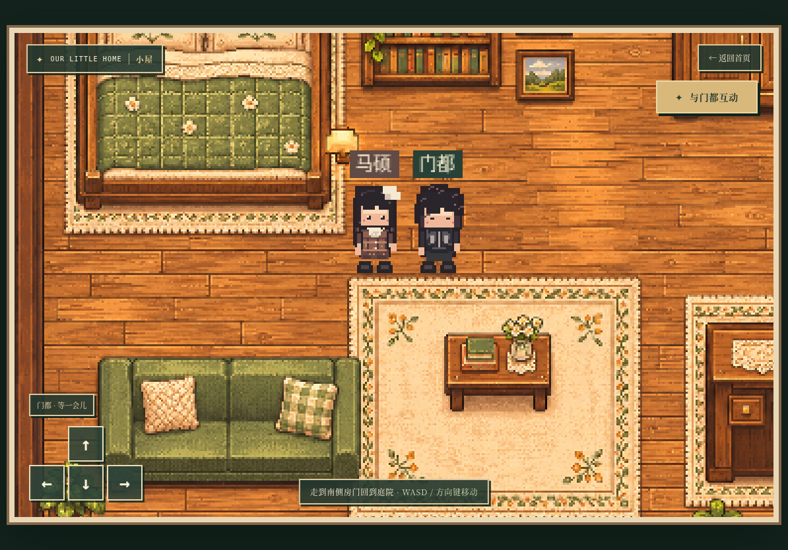
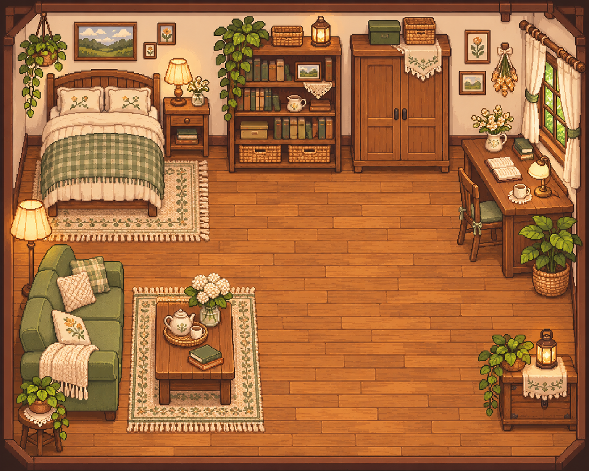
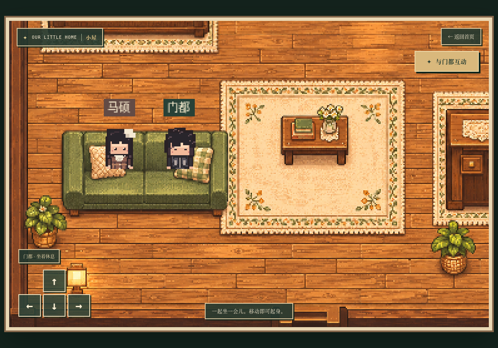
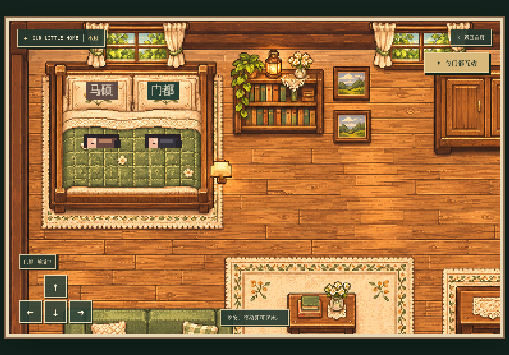
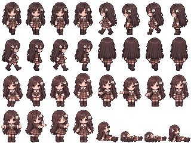

室内与双人角色美术样板
这是 PR #3 的独立可玩预览。新暖木色房间已接入游戏，可移动、触控、进出房门并和门都互动。下方截图来自实际浏览器运行；右侧旧概念图仅用于对照氛围。当前画面是 AI 辅助视觉样板，逐件手绘正式素材尚未完成。
马硕与门都 V3.1 实时对比
打开可切换四方向和站立／行走的 Phaser 室内对比预览。左旧右新，脚底同高。新图集尚未替换主游戏人物，现有互动继续使用旧图集。

室内可玩样板

目标细节与氛围


互动状态的实际画面




双人默认服装四方向图集
每张 256×192 透明 PNG；单帧 32×48。前 16 帧依次为向下、向左、向右、向上，各方向四帧。后 16 帧为临时互动姿态。点击图集可打开原始 PNG。



本轮范围
| 已接入 | 仍需制作 |
|---|---|
| 480×384 详细室内底图、床和沙发遮挡裁片、对应的家具碰撞与坐睡锚点、双人默认四向行走和临时互动帧 | 按真人照片精修角色、正式同步互动帧、第二套服装、可独立替换的透明家具图块、庭院重制 |
详细房间是 AI 辅助生成、离线缩至游戏像素的可玩视觉样板；家具目前主要绘在同一张底图上，不能冒充逐件手绘正式素材。角色仍是程序绘制的临时稿。实际 iPad Safari 操作需要在设备上验收。